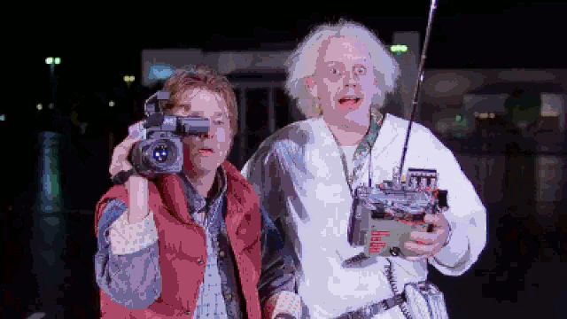
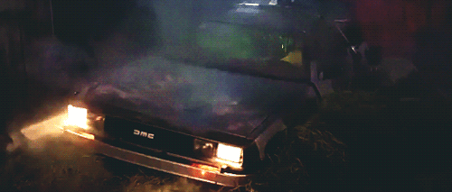
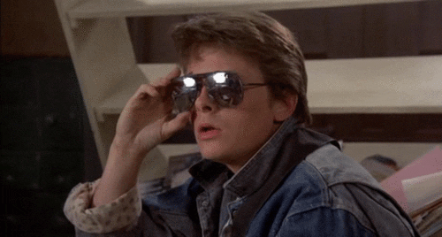

1985 год.
Марти Макфлай — обычный семнадцатилетний американский юноша, живущий в 1985 году в неблагополучной семье Макфлаев в городке Хилл-Вэлли (штат Калифорния). Его отец Джордж постоянно терпит издевательства и насмешки своего шефа Биффа Таннена, а мать Лоррейн — алкоголичка с избыточным весом, его брат Дейв работает на низшей работе, а сестра никак не может найти себе кавалера. Утром 25 октября 1985 года Марти по дороге в школу заходит домой к своему другу-учёному, доктору Эмметту Брауну по прозвищу Док, но самого его не застаёт. Док звонит Марти и просит встретиться в 1:15 ночи на автостоянке у торгового центра «Две сосны», дабы показать ему нечто удивительное. В этот момент все часы в доме Дока начинают синхронно звонить. Услышав звон, Док радуется, ведь его эксперимент успешно закончился и теперь все его часы отстают ровно на 25 минут. Марти понимает, что опаздывает, прощается с Доком и на скейтборде, цепляясь за бамперы машин, быстро добирается до школы.
В школе Марти встречает свою подружку Дженнифер, которая тоже умудрилась опоздать. Они попадаются на глаза директору Стрикленду, который выписывает квитанцию за опоздание обоим, напоминая Марти о том, что его отец всегда был неудачником и его тоже ждёт такая участь. После занятий Марти и его музыкальный коллектив проходят прослушивание, но музыкальная комиссия не принимает его музыку. Дженнифер советует ему не расстраиваться и продолжать репетировать. В этот момент какая-то старушка даёт Марти листовку, призывающую сохранить часы на здании суда, которые уже 30 лет находятся в нерабочем состоянии после удара молнии. Вечером за ужином его мать рассказывает о том, какими были их отношения с его отцом и как они познакомились, когда тот попал под машину её отца.
Марти встречается с Доком, как и планировалось. Тот демонстрирует своему юному другу DeLorean DMC-12, модифицированный им под машину времени. Она работает при помощи плутония, генерирующего 1,21 ГВт мощности для устройства, которое изобретатель назвал «потоковым конденсатором». Док объясняет, что для перемещения во времени необходимо достигнуть скорости 88 миль в час (142 км/ч). Посадив своего пса Эйнштейна в машину, он отправляет его в будущее ровно на одну минуту. Собака благополучно возвращается, и затем Док делится на видеокамеру своими планами относительно путешествия на 25 лет вперёд (в 2010 год). Однако в этот момент Браун замечает, что ливийские террористы, у которых он обманом получил плутоний для машины, когда те заказали у него бомбу, нашли его, и их микроавтобус приближается к автостоянке. Марти спасается, прыгнув в DeLorean, однако на его глазах один из террористов расстреливает безоружного Дока в упор из автомата Калашникова (который периодически заклинивает). Террористы пускаются в погоню за Марти, и один из них уже собирается взорвать машину доктора Брауна из гранатомёта РПГ-7, но в этот момент Марти достигает скорости 88 миль в час и исчезает, переместившись в 5 ноября 1955 года, поскольку эта дата была введена Доком во временном контуре (день, когда ему пришла в голову идея устройства потокового конденсатора, воплощённого в машине времени).

1955 год.

Переместившись во времени, Марти оказывается на ферме Пибоди (на месте которой позднее появится торговый центр «Две сосны») и его машина на полной скорости влетает в сарай. Хозяева просыпаются от шума и бегут к сараю. Из-за противорадиационного костюма, который Макфлай надел, когда помогал Доку заправлять машину плутонием, семья фермера принимает Марти за инопланетянина, а DeLorean — за космический корабль. Спасаясь на машине от разъярённого хозяина, вооружённого охотничьей двустволкой, Марти нечаянно сбивает одну из двух сосен возле дома фермера (впоследствии в будущем торговый центр будет назван уже «Одинокая сосна»). Решив, что всё это лишь кошмарный сон, Марти едет домой, но обнаруживает, что район, в котором он живёт (точнее, будет жить), ещё даже не застроен. Марти прячет машину за рекламным щитом нового района Lyon Estates и отправляется в город пешком.
В городе Марти окончательно убеждается, что попал в 1955 год, увидев дату в газете, затем заходит в кафе, где встречает своего отца Джорджа, а также Биффа и его банду, на тот момент — своих ровесников. Следя за Джорджем, Марти наблюдает, как тот, взобравшись на дерево, подглядывает из бинокля за переодевающейся дома Лоррейн и, сорвавшись, падает прямо на дорогу под проезжающий автомобиль её отца. Марти прыгает, чтобы спасти его, и принимает удар на себя. Очнувшись, Марти видит Лоррейн, юную и стройную, которая с первого взгляда влюбляется в него. Она ошибочно называет его Кельвином Кляйном, потому что это имя написано у Марти на трусах. Марти уворачивается от её приставаний и, пообедав с семьёй Бейнс, отправляется на поиски Дока Брауна. Марти отыскивает Дока по адресу из справочника, убеждает его, что прибыл из будущего, и просит помочь вернуться в 1985 год. Док объясняет, что плутоний, необходимый для создания мощности в 1,21 ГВт, в пятидесятые годы — большая редкость, и заменить его может разве что разряд молнии. Марти вспоминает о листовке из будущего, в которой говорилось, что молния ударит в часы на здании суда в следующую субботу, 12 ноября, ровно в 22:04. Эмметт Браун берёт на себя задачу вернуть подростка назад в будущее и предупреждает: чтобы не нарушить пространственно-временной континуум, Марти не должен ни с кем общаться. Однако Марти уже изменил ход истории, помешав знакомству своих родителей. И теперь, по мнению Дока, он во что бы то ни стало обязан свести их, иначе попросту исчезнет из бытия. Марти вспоминает, что у него с собой семейная фотография 1984 года, на которой запечатлён он сам вместе с братом Дэйвом и сестрой Линдой. С ужасом обнаружив, что у Дэйва на снимке отсутствует голова, он понимает, что Док прав.
Всю неделю Марти усиленно пытается подружить Джорджа и Лоррейн, но у него ничего не выходит — мать только влюбляется в Марти всё сильнее, а Джорджа попросту игнорирует. Всему виной нерешительность Джорджа и его страх перед Биффом Танненом, его главным противником. Зная слабость Джорджа к научной фантастике, Марти является к нему ночью в противорадиационном костюме, и, включив музыку Van Halen и представившись пришельцем Дартом Вейдером с планеты Вулкан, требует, чтобы Джордж пригласил Лоррейн на вечерний школьный бал, угрожая в противном случае «расплавить мозги». Тем временем Док разрабатывает план, благодаря которому Марти сможет вернуться в 1985 год.
Джордж же пытается пригласить Лоррейн, но ему мешает громила Бифф. Марти разрабатывает план, согласно которому Джордж должен «спасти» Лоррейн от сексуальных домогательств, которые Марти устроит в машине, когда они с Лоррейн приедут на бал. Однако в решающий момент заявляется пьяный Бифф, вытаскивает Марти из автомобиля и начинает активно приставать к Лоррейн. Банда Биффа, схватив Марти, засунула его в багажник другой машины. Действуя по плану, Джордж открывает дверь автомобиля, но вместо Марти обнаруживает в машине Биффа. Тем не менее, Джордж уже не желает отступать. Озлобленный Бифф заламывает ему руку, но Джордж, проявив решительность, наносит Биффу разящий удар кулаком свободной руки в челюсть, отчего тот теряет сознание.
Марти же оказывается запертым в багажнике машины, принадлежащей той самой группе, под музыку которой его родители впервые поцеловались. Пытаясь вызволить Марти из заточения, гитарист группы Марвин Берри повреждает руку. Марти соглашается ненадолго подменить его, но во время выступления замечает, как его брат и сестра исчезают с семейной фотографии, прикреплённой к головке гитары. Он уже чувствует, как его собственная рука начинает пропадать, но в этот момент Лоррейн и Джордж целуются. Марти приходит в себя, а на фотографию возвращаются все родственники. Затем Марти просят сыграть что-нибудь, и он играет «Johnny B. Goode» Чака Берри, плавно переходящую из рок-н-ролла 1950-х в хэви-метал 80-х. Марвин Берри звонит своему двоюродному брату Чаку и через телефонную трубку даёт тому послушать поразившую его композицию.

Закончив выступление, Марти уходит переодеваться перед возвращением домой, не забыв попрощаться с Лоррейн и Джорджем. Незадолго до этого он написал письмо Доку, чтобы предупредить его о грядущем нападении ливийцев. Однако возмущённый Док рвёт письмо, не читая, опасаясь изменить своё будущее не в лучшую сторону. Перед отправкой возникают препятствия: то из-за упавшего дерева размыкаются кабели, по которым в потоковый накопитель машины должен попасть разряд молнии, то DeLorean сразу не заводится. Но в последний момент Доку удаётся всё исправить, и ровно в 22:04 Марти успешно перемещается в 1985 год.